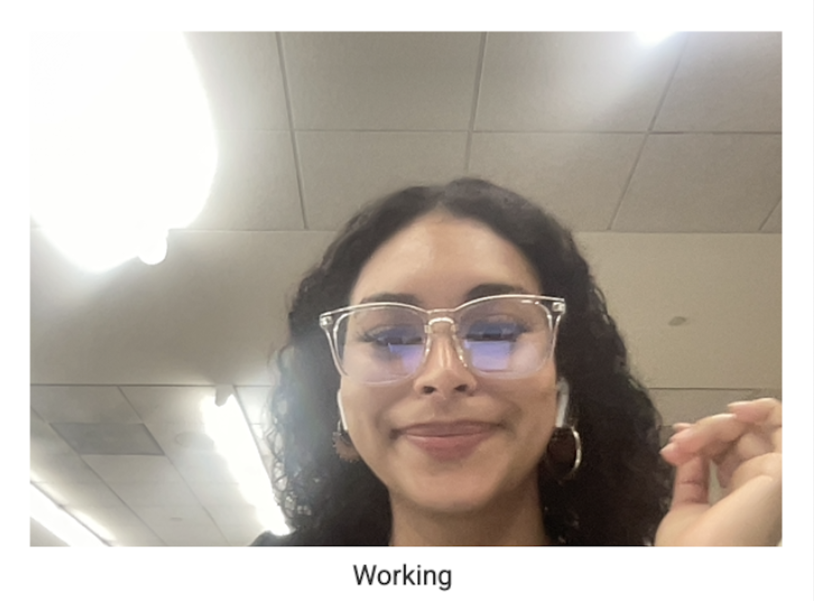

I choose this one because I think this is one of the ones where I look good and not so blurry because my initial reaction when glance back would turn on would be to move and therefore that is why I most of my pictures are blurry.
Regarding 'the handmade web and website is a shifting house next to a river of knowledge. what could yours be?' reading my hopes are that there could be such a change that allows better change where everyone is actually happy about and not dreading it because they don't like how things are moving.